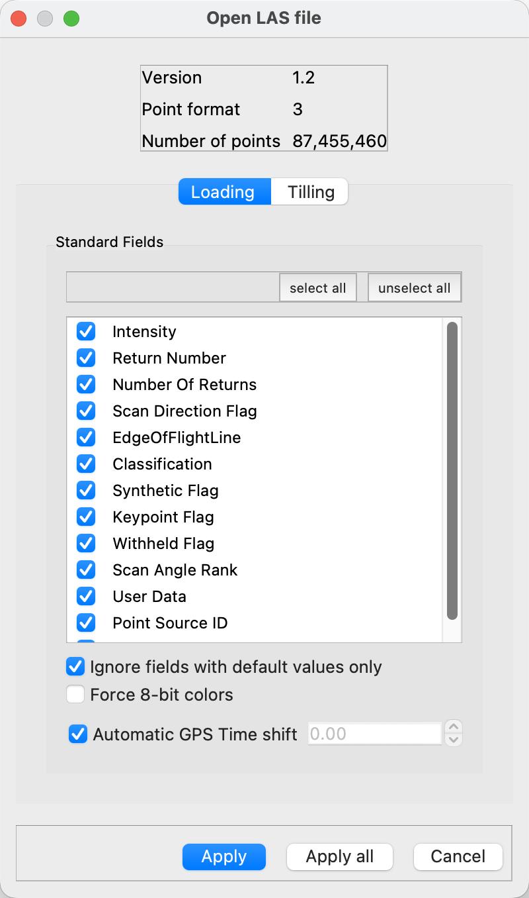
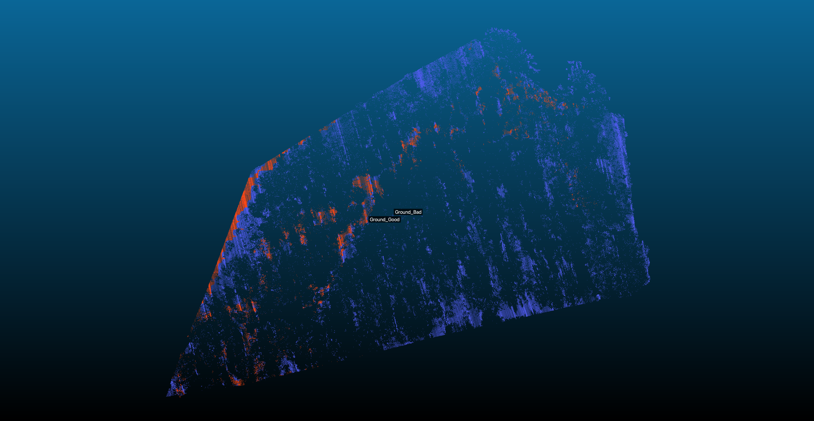
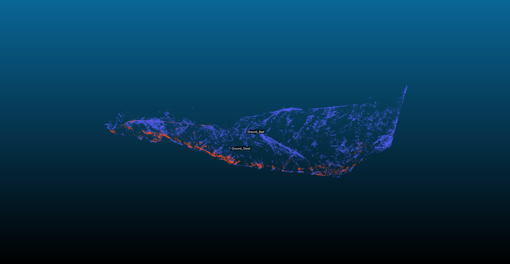
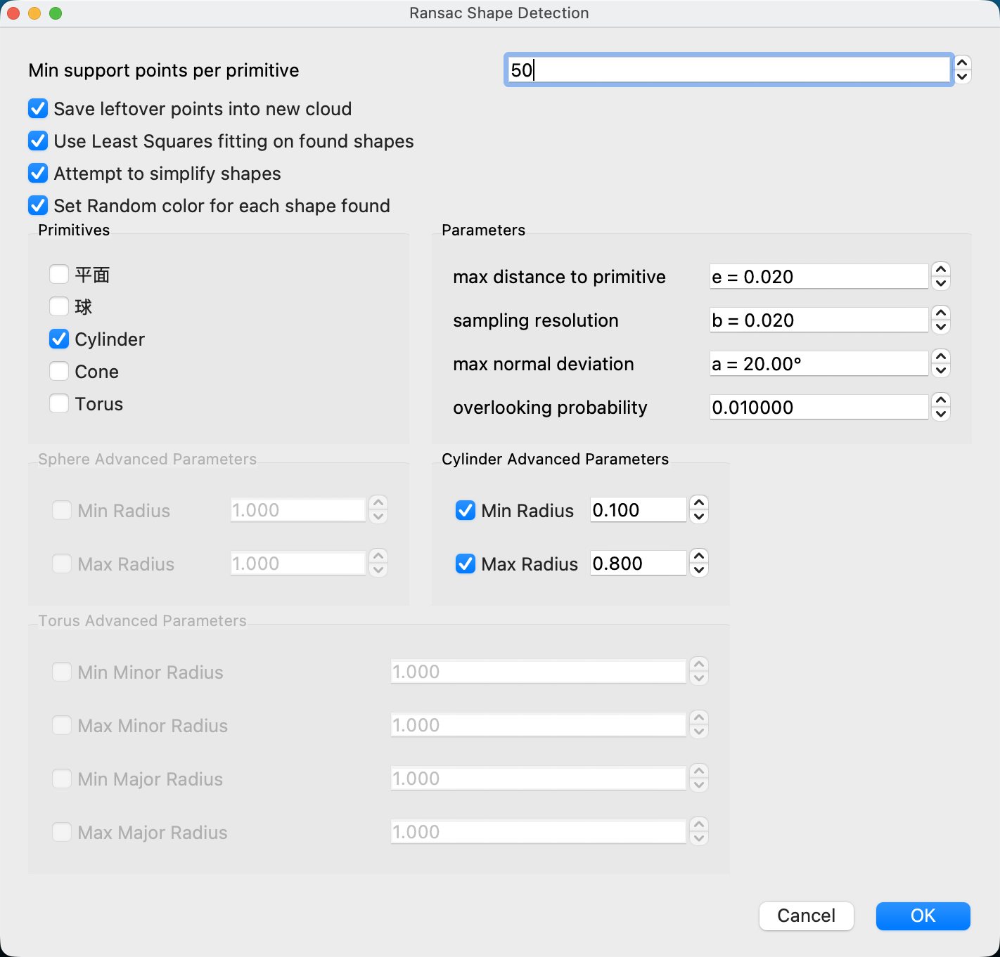

版本 1.0 状态: 预备调查·学习阶段 报告日期: 2026年01月29日
新潟森林调查项目
本研究旨在学习利用UAV搭载LiDAR点云数据进行单木识别和树木信息自动测量，加深对基本处理流程的理解。
在此阶段，我们的目标是加深对以下方面的理解：
在预备调查中，我们使用了两个开放数据集来学习处理流程。
| 项目 | 内容 |
|---|---|
| 数据大小 | 约1.1 GB |
| 地形特征 | 山岳地形（包含陡峭斜坡） |
| 使用目的 | 学习CSF滤波、高度归一化 |
| 处理状况 | 尝试了前处理流程 |
| 项目 | 内容 |
|---|---|
| 数据大小 | 约473 MB |
| 地形特征 | 相对平坦的森林区域 |
| 使用目的 | 尝试RANSAC圆柱检测 |
| 处理状况 | 单木检测算法的初步测试 |
学习了处理大规模坐标系数据的基本设置。
图1: 读取设置界面

图2: Global Shift设置
学习了分离地面点和非地面点的方法。
算法处理.png)
图3: CSF滤波界面
图4: CSF处理结果示例（等角图）
图5: CSF处理结果示例（侧面图）
尝试了计算相对于地面的相对高度的处理。

图6: 高度归一化参数设置

图7: 高度归一化处理

图8: 归一化后的渲染结果
学习了目标区域的裁剪方法。
工具.png)
图9: 裁剪盒工具
.png)
图10: 切片处理
作为传统形状检测算法之一，尝试了RANSAC圆柱拟合。
图11: RANSAC设置界面（CloudCompare功能）

图12: RANSAC检测结果示例（CloudCompare可视化）
主要尝试内容:
确认的要点:
图13: San Juan Fault 数据的俯视图（地面点显示为红色）

图14: 5m切片处理尝试示例
主要尝试内容:
图15: StREAM Lab数据的分割处理
.png)
图16: 法线向量计算
※这些数值是尝试阶段的参考值，未进行精度验证。
| 序号 | DBH(cm) | 高度(m) | 点数 |
|---|---|---|---|
| 1 | 15.70 | 14.13 | 167 |
| 2 | 15.67 | 14.10 | 86 |
| 3 | 15.31 | 13.78 | 87 |
| 4 | 15.30 | 13.77 | 87 |
| 5 | 15.25 | 13.73 | 113 |
| 问题 | 详细 |
|---|---|
| 地形适应性 | 山岳地形出现大量异常值。需要根据地形进行预处理 |
| 参数调整 | 需要学习RANSAC的高度约束、倾斜约束等设置方法 |
| 算法选择 | 需要比较检讨RANSAC以外的方法 |
| 精度验证方法 | 需要学习检测结果的评估方法 |
| 预处理自动化 | 目前手动操作较多，有效率化的余地 |
| 类别 | 方法·途径示例 | 特点 |
|---|---|---|
| 传统算法 |
• RANSAC（含改良版） • 分水岭算法（Watershed） • 区域生长法（Region Growing） • 聚类（DBSCAN等） • Hough变换 |
可解释性高，需要参数调整 |
| 机器学习 |
• PointNet / PointNet++ • 3D-CNN • Random Forest • 语义分割（Semantic Segmentation） |
高精度可能性，需要大量训练数据 |
| 混合方法 |
• 传统方法+机器学习的组合 • 多尺度分析 |
可发挥各方法的优势 |
Niigata_Research_Prep/
├── 00_Raw_Data/ # 原始LiDAR数据
├── 01_Processed/ # 处理中的数据
├── 02_Screenshots/ # 操作记录截图
│ ├── San Juan Fault/ # San Juan数据处理界面
│ └── StREAM Lab/ # StREAM Lab数据处理界面
├── 03_Scripts/ # 试作脚本
├── 04_Results/ # 尝试结果
│ ├── StREAM Lab/ # StREAM Lab检测结果
│ └── reports/ # 本报告
└── README.md